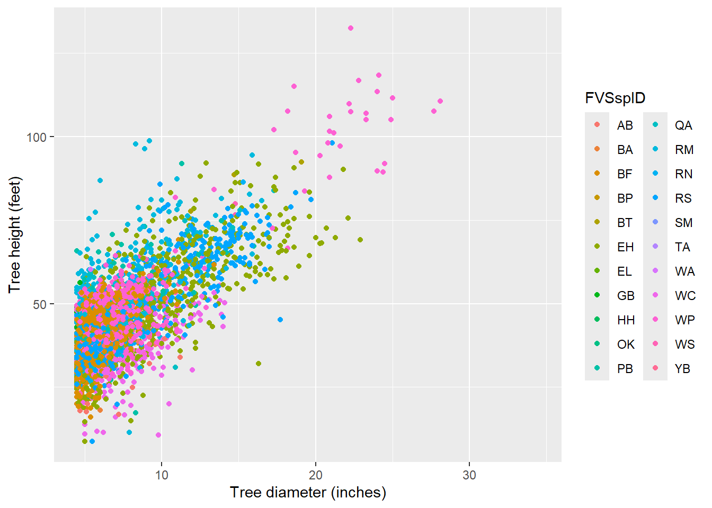
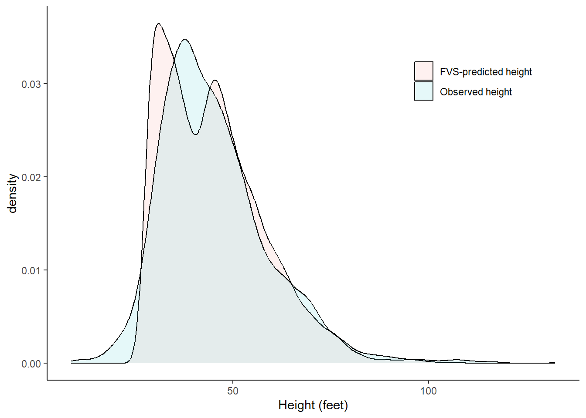
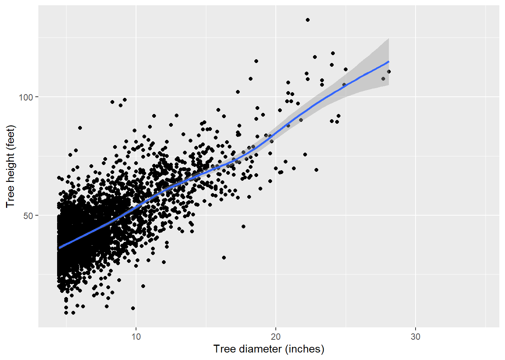
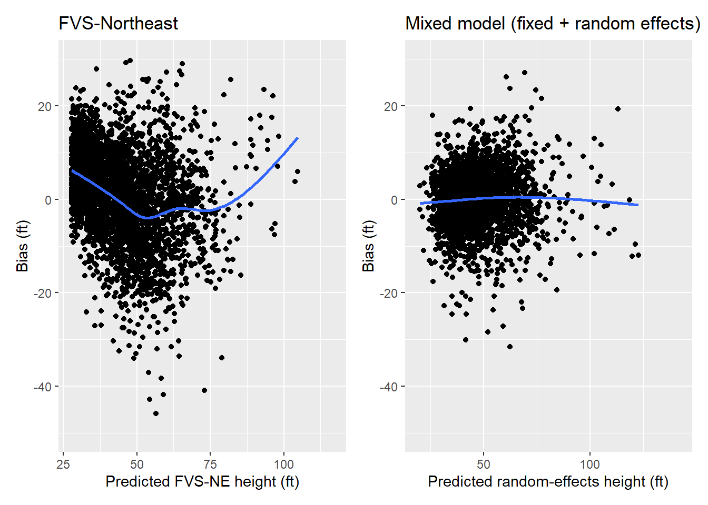

library(tidyverse)
Total height is one of the most useful measurements of a tree, but it’s often not measured. This is because measuring heights takes considerable time and effort. While it may be easy for a forester to measure the diameter of a tree, to obtain a proper measurement of a tree you generally need to walk away from it. This can take a lot of time if there are dozens of trees on a forest inventory plot.
To expedite the time spent in the field, most foresters will subsample tree heights. For example, foresters can measure the height of every fourth tree they encounter, or measure heights on all trees in every fourth inventory plot.
Forest inventory data are often used in a variety of applications after the data are collected. For example, data are used to determine stand volume, biomass, and carbon. However, most of the equations that determine those attributes require a value for the tree’s height. So what do you do when you didn’t collect heights on all trees?
This post will discuss the idea of imputation, or how to make the best prediction by using all data available. An example is shown in R using a few different approaches are used to impute tree heights based on traditional forest inventory measurements.
Penobscot Experimental Forest data
The data used here is from the Penobscot Experimental Forest (PEF), a long-term silvicultural experiment based in central Maine. The species are typical of the mixed-species Acadian Forest, an ecotone between the boreal forests to the north and the broadleaf forests to the south. Permanent sample plots are located in several management units (MU) across the forest.
There are several remeasurements of permanent sample plots on trees in the PEF database. I use only the most recent measurement from each plot for this analysis. On the PEF, permanent sample plots consist of nested 1/5-, 1/20-, and 1/50-acre circular plots for measuring trees >= 4.5 inches, 2.5 to 4.4 inches, and 0.5 to 2.4 inches in diameter at breast height, respectively. Tree heights are measured on one-third of the plots. (NOTE: I skip some of the data cleaning on this data set in this post, but you can find the raw data and the full code set on GitHub.)
In total there are 14,489 total trees in the database, but only 3,382 have height measurements. Here are 10 random rows of data, and note the missing heights for many of them:
| MU | Plot | Year | TreeNum | FVSspID | dbh | HT |
|---|---|---|---|---|---|---|
| 23A | 84 | 2001 | 12100 | PB | 4.9 | NA |
| 16 | 55 | 2012 | 40700 | EH | 16.1 | NA |
| 23A | 75 | 2001 | 42000 | WS | 5.2 | NA |
| 29B | 24 | 2011 | 4000 | RM | 4.8 | NA |
| 29A | 41 | 2009 | 54200 | RS | 6.6 | NA |
| 20 | 31 | 2008 | 85100 | WC | 13.1 | 51.2 |
| 6 | 13 | 2010 | 10700 | EH | 5.7 | NA |
| 22 | 12 | 2014 | 1500 | BF | 4.6 | NA |
| 16 | 44 | 2012 | 12800 | EH | 10.6 | NA |
| 23A | 62 | 2001 | 72900 | RM | 6.9 | NA |
We can plot the tree diameter-height relationship, and note the many species are found in the database. Data are stored in the tree data set, and the dbh and HT variables are of interest. Note the warning message that R provides–this is a result of the 11,000+ trees where height was not measured:
library(tidyverse)ggplot(tree, aes(x = dbh, y = HT, col = FVSspID)) +
geom_point() +
labs (x = "Tree diameter (inches)",
y = "Tree height (feet)")Warning: Removed 11108 rows containing missing values or values outside the scale range
(`geom_point()`).
One way to determine the heights of missing trees is to apply a regional equation that predicts total height. In the northeast region of the United States, the Forest Vegetation Simulator-Northeast variant is a popular model for determining forest growth and yield. The FVS variant uses two model forms to determine height, depending on species. The first is the Curtis-Arney model form:
\[HT=4.5+a_0\text{ exp}(a_1 \times DBH^{a_2})\] and the second is the Wykoff model form:
\[HT=4.5+\text{ exp}(b_1 + b_2 / DBH+1)\] To apply these equations to the tree data set, the FVSNE.SPP() function specifies which species uses which height equation by specifying the HTDBH_EQ variable:
FVSNE.SPP <- function(SPP){
if(SPP == 'BF'){HTDBH_EQ = 'C'; Dbw = 0.1}
else if(SPP == 'TA'){HTDBH_EQ = 'C'; Dbw = 0.1}
else if(SPP == 'WS'){HTDBH_EQ = 'C'; Dbw = 0.2}
else if(SPP == 'RS'){HTDBH_EQ = 'C'; Dbw = 0.2}
else if(SPP == 'RN'){HTDBH_EQ = 'C'; Dbw = 0.1}
else if(SPP == 'WP'){HTDBH_EQ = 'C'; Dbw = 0.4}
else if(SPP == 'WC'){HTDBH_EQ = 'W'; Dbw = 0.1}
else if(SPP == 'EH'){HTDBH_EQ = 'C'; Dbw = 0.1}
else if(SPP == 'RM'){HTDBH_EQ = 'W'; Dbw = 0.2}
else if(SPP == 'SM'){HTDBH_EQ = 'W'; Dbw = 0.2}
else if(SPP == 'YB'){HTDBH_EQ = 'W'; Dbw = 0.1}
else if(SPP == 'PB'){HTDBH_EQ = 'W'; Dbw = 0.1}
else if(SPP == 'GB'){HTDBH_EQ = 'W'; Dbw = 0.1}
else if(SPP == 'AB'){HTDBH_EQ = 'W'; Dbw = 0.1}
else if(SPP == 'WA'){HTDBH_EQ = 'W'; Dbw = 0.2}
else if(SPP == 'BA'){HTDBH_EQ = 'W'; Dbw = 0.2}
else if(SPP == 'QA'){HTDBH_EQ = 'W'; Dbw = 0.3}
else if(SPP == 'BP'){HTDBH_EQ = 'W'; Dbw = 0.2}
else if(SPP == 'BT'){HTDBH_EQ = 'W'; Dbw = 0.2}
else if(SPP == 'OK'){HTDBH_EQ = 'W'; Dbw = 0.2}
else if(SPP == 'EL'){HTDBH_EQ = 'W'; Dbw = 0.1}
else if(SPP == 'HH'){HTDBH_EQ = 'W'; Dbw = 0.2}
else{HTDBH_EQ = 'W'; Dbw = 0.1}
return(c(HTDBH_EQ = HTDBH_EQ, Dbw = Dbw))}The FVSNE.HTDBH() function adds the species-specific coefficients for each species:
#FVS HT-DBH (Table 4.1.1 in FVS-NE guide)
FVSNE.HTDBH <- function(SPP,HTDBH_EQ,DBH,Dbw){
if(SPP=='BF'){ca_a1=2163.9468; ca_a2=6.2688; ca_a3=-0.2161; w_a1=4.5084; w_a2=-6.0116}
else if(SPP=='TA'){ca_a1=2163.9468; ca_a2=6.2688; ca_a3=-0.2161; w_a1=4.5084; w_a2=-6.0116}
else if(SPP=='WS'){ca_a1=2163.9468; ca_a2=6.2688; ca_a3=-0.2161; w_a1=4.5084; w_a2=-6.0116}
else if(SPP=='RS'){ca_a1=2163.9468; ca_a2=6.2688; ca_a3=-0.2161; w_a1=4.5084; w_a2=-6.0116}
else if(SPP=='RN'){ca_a1=266.4562; ca_a2=3.9931; ca_a3=-0.386; w_a1=4.5084; w_a2=-6.0116}
else if(SPP=='WP'){ca_a1=2108.8442; ca_a2=5.6595; ca_a3=-0.1856; w_a1=4.609; w_a2=-6.1896}
else if(SPP=='WC'){ca_a1=2163.9468; ca_a2=6.2688; ca_a3=-0.2161; w_a1=4.5084; w_a2=-6.0116}
else if(SPP=='EH'){ca_a1=266.4562; ca_a2=3.9931; ca_a3=-0.386; w_a1=4.5084; w_a2=-6.0116}
else if(SPP=='RM'){ca_a1=268.5564; ca_a2=3.1143; ca_a3=-0.2941; w_a1=4.3379; w_a2=-3.8214}
else if(SPP=='SM'){ca_a1=209.8555; ca_a2=2.9528; ca_a3=-0.3679; w_a1=4.4834; w_a2=-4.5431}
else if(SPP=='YB'){ca_a1=170.5253; ca_a2=2.6883; ca_a3=-0.4008; w_a1=4.4388; w_a2=-4.0872}
else if(SPP=='PB'){ca_a1=170.5253; ca_a2=2.6883; ca_a3=-0.4008; w_a1=4.4388; w_a2=-4.0872}
else if(SPP=='GB'){ca_a1=170.5253; ca_a2=2.6883; ca_a3=-0.4008; w_a1=4.4388; w_a2=-4.0872}
else if(SPP=='AB'){ca_a1=526.1393; ca_a2=3.8923; ca_a3=-0.2259; w_a1=4.4772; w_a2=-4.7206}
else if(SPP=='WA'){ca_a1=91.3528; ca_a2=6.9961; ca_a3=-1.2294; w_a1=4.5959; w_a2=-6.4497}
else if(SPP=='BA'){ca_a1=178.9308; ca_a2=4.9286; ca_a3=-0.6378; w_a1=4.6155; w_a2=-6.2945}
else if(SPP=='QA'){ca_a1=337.6685; ca_a2=3.6273; ca_a3=-0.3208; w_a1=4.5128; w_a2= -4.9918}
else if(SPP=='BP'){ca_a1=91.3528; ca_a2=6.9961; ca_a3=-1.2294; w_a1=4.5959; w_a2= -6.4497}
else if(SPP=='BT'){ca_a1=91.3528; ca_a2=6.9961; ca_a3=-1.2294; w_a1=4.5959; w_a2=-6.4497}
else if(SPP=='OK'){ca_a1=196.0565; ca_a2=3.0067; ca_a3=-0.385; w_a1=4.5225; w_a2=-4.9401}
else if(SPP=='EL'){ca_a1=1005.8067; ca_a2=4.6474; ca_a3=-0.2034; w_a1=4.3744; w_a2=-4.5257}
else if(SPP=='HH'){ca_a1=109.7324; ca_a2=2.2503; ca_a3=-0.413; w_a1=4.0322; w_a2=-3.0833}
else{ca_a1=68.5564; ca_a2=3.1143; ca_a3=-0.2941; w_a1=4.3379; w_a2=-3.8214}
HT = ifelse(HTDBH_EQ =="C" & DBH < 3.0,(4.5+ca_a1*exp(-1*ca_a2*3**ca_a3)-4.51*(DBH-Dbw)/(3-Dbw))+4.51,
ifelse(HTDBH_EQ =="C" & DBH >= 3.0,4.5+ca_a1*exp(-1*ca_a2*DBH**ca_a3),
4.5+exp(w_a1+w_a2/(DBH+1))))
return(HT=HT)}Now we predict the height of each tree in the PEF data using the FVS-NE equation:
aa <- sapply(tree$FVSspID, FVSNE.SPP)
tree <- tree %>%
mutate(HTDBH_EQ = t(aa)[,1],
Dbw = as.numeric(t(aa)[,2]),
HT_PRED_FVS = mapply(FVSNE.HTDBH, SPP = FVSspID,
HTDBH_EQ = HTDBH_EQ,
DBH = dbh,
Dbw = Dbw))We can see the for the heights measured, the FVS-predicted heights show a bimodal distribution. This is likely a result of the two different equations used:
ggplot(tree_ht, aes(x = height_feet, fill = Height_model)) +
geom_density(alpha = 0.1) +
labs (x = "Height (feet)") +
theme(panel.background = element_rect(fill = "NA"),
axis.line = element_line(color="black"),
legend.title = element_blank(),
legend.position = c(0.8, 0.8))Warning: A numeric `legend.position` argument in `theme()` was deprecated in ggplot2
3.5.0.
ℹ Please use the `legend.position.inside` argument of `theme()` instead.Warning: Removed 11108 rows containing non-finite outside the scale range
(`stat_density()`).
Modeling tree height with a mixed model
We could use the FVS equations as predictions of tree height, but the drawback is that those equations are not localized to the PEF. The benefit is we have numerous predictions of tree height on the same forest that we want to predict on. And we should take advantage of that. Hence, we can use mixed models to make localized predictions.
For most models of tree height, nonlinear models work well. However, there is a general linear trend between height and diameter, so for the purpose of this tutorial, we’ll choose a linear model:
p.ht <- ggplot(tree, aes(x = dbh, y = HT)) +
geom_point() +
stat_smooth() +
labs (x = "Tree diameter (inches)",
y = "Tree height (feet)")
p.ht
A popular R package for performing linear mixed models is lme4. We will use it to fit a linear mixed model that specifies fixed and random effects:
library(lme4)The lmer() function is the mixed model equivalent of lm() and parameter estimates are fit using maximum likelihood. We know that there are several plots nested within several management units from multiple species. So, we can specify these as random effects on the intercept, writing + (1 | FVSspID/MU/Plot) after specifying the independent variable DBH:
ht.lme <- lmer(HT ~ dbh + (1 | FVSspID/MU/Plot),
data = tree)
summary(ht.lme)Linear mixed model fit by REML ['lmerMod']
Formula: HT ~ dbh + (1 | FVSspID/MU/Plot)
Data: tree
REML criterion at convergence: 22280.2
Scaled residuals:
Min 1Q Median 3Q Max
-5.3634 -0.5141 0.0374 0.5428 4.5896
Random effects:
Groups Name Variance Std.Dev.
Plot:(MU:FVSspID) (Intercept) 10.94 3.308
MU:FVSspID (Intercept) 32.66 5.715
FVSspID (Intercept) 52.84 7.269
Residual 34.65 5.886
Number of obs: 3381, groups:
Plot:(MU:FVSspID), 437; MU:FVSspID, 148; FVSspID, 18
Fixed effects:
Estimate Std. Error t value
(Intercept) 23.94183 2.00369 11.95
dbh 2.99752 0.04432 67.64
Correlation of Fixed Effects:
(Intr)
dbh -0.171We can see from the lmer() output that the values for the fixed effects are 23.94183 and 2.99752, respectively. The Random effects section contains details on the variance of the random effects and their residuals. We could use the ranef() function to extract the values of the random effect terms. (But note there will be many values because there are many Species-MU-Plot combinations.)
Imputing tree height
Once we have a model, we can use R’s predict() function to apply it to our tree data set. We use the re.form statement to specify that we want to make predictions using fixed effects only, or predictions using subject-specific random effects (e.g., the best linear unbiased predictions).
If re.form = NULL, predictions are made including all random effects. This would be fitting if you subsampled tree heights measured on an individual plot. Adding the allow.new.levels = TRUE statement will make predictions using fixed effects only. This is ideal for the PEF data because there are many plots where no trees were measured for height:
tree <- tree %>%
mutate(HT_PRED_MIXED = predict(ht.lme, tree, re.form = NULL, allow.new.levels = TRUE))When compared to the FVS model, we can see that the mixed model shows smaller residuals and less bias across the range in heights:
p.ht.fvs <- ggplot(tree, aes(x = HT_PRED_FVS, y = (HT-HT_PRED_FVS))) +
geom_point() +
stat_smooth(se = F) +
scale_y_continuous(limits = c(-50, 30)) +
labs(x = 'Predicted FVS-NE height (ft)',
y = 'Bias (ft)',
title = "FVS-Northeast")
p.ht.mixed <- ggplot(tree, aes(x = HT_PRED_MIXED, y = (HT-HT_PRED_MIXED))) +
geom_point() +
stat_smooth(se = F) +
scale_y_continuous(limits = c(-50, 30)) +
labs(x = 'Predicted random-effects height (ft)',
y = 'Bias (ft)',
title = "Mixed model (fixed + random effects)")library(patchwork)
p.ht.fvs + p.ht.mixed
Conclusion
There are many ways to impute missing values, and mixed models are very fitting for forest inventory data because of their hierarchical structure. If variables of interest are subsampled, mixed models can account for random variation at different levels. R’s predict() function works excellent for making mixed model predictions at these different levels.
–
By Matt Russell. PS: I’ve suppressed some of the code that cleans the Penobscot data set. You can find the raw data and the full code set on GitHub.